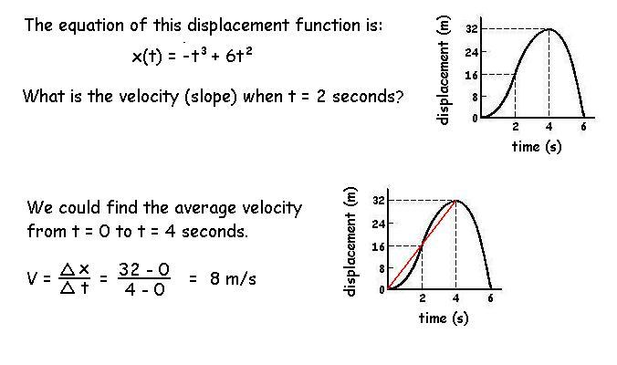
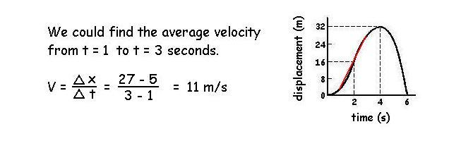
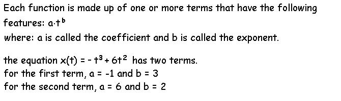
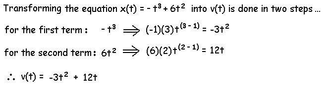
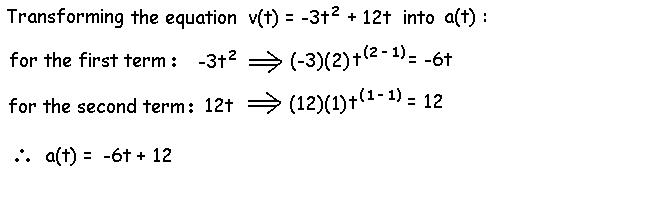
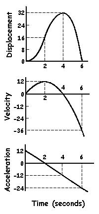
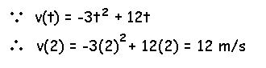

Elementary Calculus
 As Δ t gets smaller, the average velocity gets closer to the instantaneous velocity. However, since we cannot divide by zero, we cannot calculate V when Δ t = 0.
Differential Calculus
Sir Isaac Newton developed a method to calculate instantaneous slopes called "differential calculus". The method requires the knowledge of functions from the previous page and transforms the displacement function into a velocity function. We already know that the displacement function allows us to calculate the displacement at any instant in time. Therefore, if we can transform displacement into a velocity function, we can calculate the velocity at any instant (i.e. when t = 2 seconds) without calculating an average velocity or dividing by zero.

In order to transform the displacement function into the velocity function we must use the following transfer function for differential calculus.

In order to transform this velocity function into the acceleration function, we must differentiate a second time. This is done using the same transfer fuction as before on the terms in the velocity function.

 Now, we have three functions that perfectly describe the displacement, velocity and acceleration of the object at any point in time. If we plot the three functions, they will look like those to the right.
We use these equations to exactly answer questions like "What is the velocity at two seconds?"

Notice that the velocity function is the slope of the displacement function. As the slope of the displacement function increases between 0 and 2 seconds, the velocity increases. As the slope of the displacement function decreases between 2 and 4 seconds, the velocity decreases. As the slope of the displacement function becomes negative after 4 seconds, the velocity does also.
Calculus is a very important tool in biomechaincs because we often measure displacement using video and then differentiate twice to get acceleration which can be multiplied by mass to yield force. Velocity is important for energy, work and power calculations.
Although displacement, velocity and acceleration are the most commonly used derivatives in biomechanics, higher derivatives have also been used. The rate of force application (called "yank") has received attention for muscle capacity and in the design of roller coasters and elevators.
Among some of the most important things that designers of roller coasters must pay attention to are the acceleration, rate of change of acceleration "jerk" and the rate of change of jerk "snap". These third, fourth and fifth derivatives of displacement are thought to be important for making the ride exciting and sufficiently scary without being uncomfortable and risking bodily harm or structural collapse.
What is the jerk and snap in the above example?